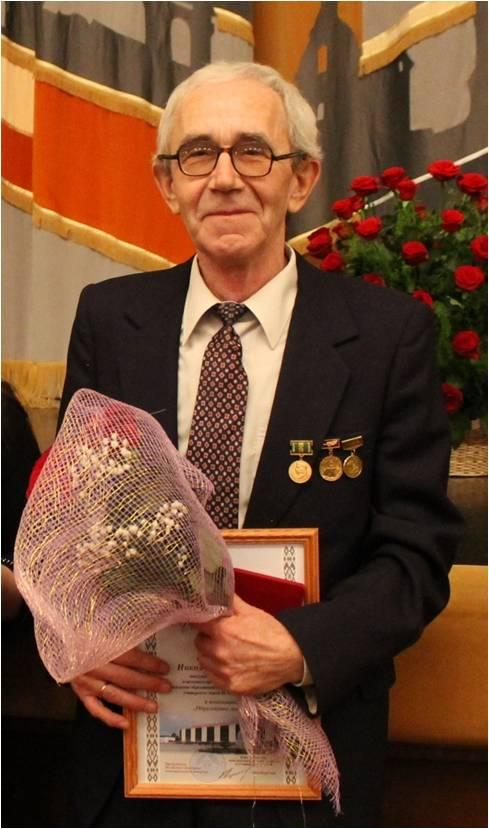
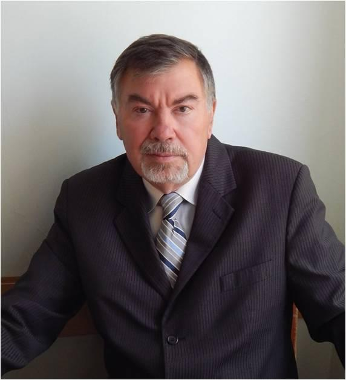
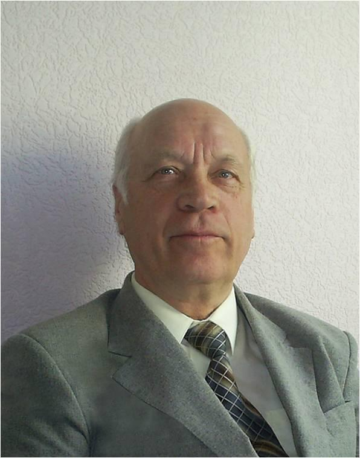
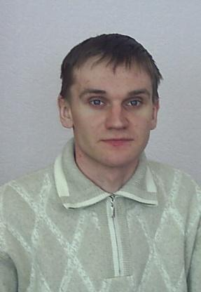
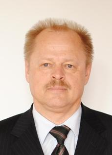
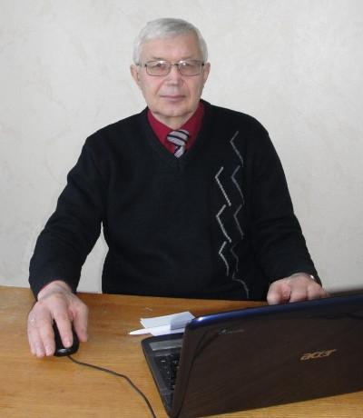

На 5 кафедрах факультета работают 62 преподавателя, из которых 65% имеют ученые степени и звания: 5 доктора наук, 6 профессоров и 34 кандидата наук.

Воробьев Николай Тимофеевич
Профессор, доктор физико-математических наук, заведующий кафедрой алгебры и методики преподавания математики. Николай Тимофеевич принимает участие в международных научных программах, реализуемых учеными Республики Беларусь совместно с учеными России, Германии, Испании, Польши, Венгрии и Китая и имеет совместные научные труды с ведущими учеными КНР и Польши, является постоянным обозревателем двух крупных международных журналов (издательств США, Германии), членом редколлегии научных журналов «Веснiк ВДУ», «Вестник ПГУ», членом экспертного Совета ВАК Республики Беларусь, членом собрания НАН Республики Беларусь, членом Совета по защите докторских и кандидатских диссертаций в области алгебры. Н.Т.Воробьев является автором более 250 научных работ, в том числе, в ведущих научных журналах Беларуси, России, США, Германии, Китая, Японии, Венгрии и Польши.
Член Белорусского математического общества, член Американского математического общества. Награжден нагрудным знаком «Отличник образования РБ» и Медалью «Франциска Скорины», Почетной Грамотой управления образования Витебского облисполкома за многолетнюю добросовестную работу в системе образования, Почетной грамотой Министерства образования РБ за многолетнюю плодотворную научно-педагогическую деятельность, Почетной Грамотой Президиума и исполкома городского Совета народных депутатов за плодотворную научно-педагогическую деятельность по подготовке учительских кадров, Грамотой Министерства образования РБ за многолетнюю плодотворную научно-педагогическую деятельность. Получил звание «Лауреат премии за лучшую НИР ВГУ», «Человек года ВГУ 2013», «Человек года Витебщины 2015».
Тема докторской диссертации: Развитие локального метода Хартли в теории конечных разрешимых групп

Трубников Юрий Валентинович
Профессор, доктор физико-математических наук, профессор кафедры геометрии и математического анализа.
Юрий Валентинович является специалистом по теории функций и и функциональному анализу. Результаты научных исследований докладывались им на многих конференциях.
Трубников Ю.В. реферирует научные статьи для журнала «Mathematical Reviews», является членом Белорусского и Американского математического общества.
Автор более 100 научных работ и 4 монографий.
Тема докторской диссертации: Монотонные дифференциальные уравнения.
Научные интересы: сложные динамические системы, теория апроксимации.

Семенов Ефим Евстафьевич
Профессор, кандидат педагогических наук, профессор кафедры алгебры и методики преподавания математики.
Награжден Почетнай грамотой Министерства просвещения РСФСР за успешную работу по подготовке кадров народного образования, грамотой ВГПИ им.С.М.Кирова в связи с 55-летием, почетной грамотой Первомайского райкома КП Белоруссии за большую и плодотворную работу по коммунистическому воспитанию молодежи, почетной грамотой ВГПИ им. С.М.Кирова за активное участие в организации научно-исследовательской работы студентов, Почетной грамотой ВГПИ им. С.М.Кирова в связи с 60-летием, почетная грамота Железнодорожного отдела образования за большой вклад в преподавании математики и оказание методической помощи учителям, граматой Министерства образования Республики Беларусь за многолетнюю добросовестную научно-педагогическую деятельность, Почетной грамотой Министерства образования Республики Беларусь.
Автор пяти книг, четыре из которых опубликованы в издательстве "Просвещение".
Тема кандидатской диссертации: Обучение обобщению и конкретизации при изучении геометрических понятий.

Воробьев Николай Николаевич
Доцент, доктор физико-математических наук, профессор кафедры алгебры и методики преподавания математики.
Автор одной монографии и более 70 научных работ.
Тема докторской диссертации: Алгебраические решетки классов конечных групп.
Научные интересы: теория конечных групп и их классов: формации конечных групп, классы Фиттинга конечных групп, решетки формаций, решетки классов Фиттинга, частично насыщенные и частично композиционные формация, локальные классы Фиттинга.

Михасев Геннадий Иванович
Профессор, доктор физико-математических наук, профессор кафедры прикладного и системного программирования.
Член экспертного совета ВАК Республики Беларусь, член ред. коллегий научных журналов «Facta Universitatis, Series: Mechanical Engineering», «Вестник БГУ. Серия 1», «Механика машин, механизмов и материалов», «Вестник Полоцкого государственного университета. Серия Е», Республиканского сборника «Теоретическая и прикладная механика», а также международного сборника «Численные методы в механике» (Санкт-Петербург), член международного общества прикладной математики и механики (GAMM, с 2001г), Европейского общества механиков (EUROMECH, с 2003г).
Награды: Грамоты МО РБ (2002) и Витебского областного исполнительного комитета (2007) за вклад в развитие белорусской науки и подготовку специалистов высшей квалификации.
Тема докторской диссертации: Волновые пакеты в тонких оболочках.
Геннадий Иванович является автором более 200 научных работ.
Научные интересы: общие вопросы биомеханики, математическое моделирование биомеханических систем человека (слуховая система, кровеносная система и др.), теория тонких изотропных и слоистых композитных оболочек: устойчивость, колебания, волны, гашение вибраций, нелокальные континуальные модели наноразмерных структур, локализованные волновые процессы в упругих средах, асимптотические методы.

Корниенко Алексей Александрович
Профессор, доктор физико-математических наук, профессор кафедры информатики и информационных технологий.
Являясь специалистом по теории спектров лазерных материалов, активированных редкоземельными ионами, Корниенко А.А. совместно с профессором А.А. Каминским (Институт кристаллографии, г. Москва) и доцентом Е.Б.Дуниной разработал модифицированную теорию интенсивностей спектральных линий, которая широко применяется исследователями из Испании, Франции, Англии, США, Японии, Китая для описания экспериментальных результатов.
Является автором более 160 научных работ, многие из которых напечатаны в ведущих физических журналах РБ, России и дальнего зарубежья, индекс Хирша по SCOPUS – 8, рецензент журналов “Journal of Applied Spectroscopy”, “Optical Materials”, “Spectrochimica Acta Part A: Molecular and Biomolecular Spectroscopy”, участвует в работе «Optical Society of America».
Научные интересы: компьютерное и математическое моделирование физических процессов и свойств твердых тел, разработка новых моделей оптических центров лазерных материалов с последующим их тестированием, исследование взаимосвязи интенсивности межмультиплетных переходов и штарковской структуры мультиплетов, исследования по моделированию оптических центров люминофоров для источников квазибелого света, разработка численных методов расчета электромагнитных полей в объектах контроля, построение математических моделей первичных измерительных преобразователей с целью внедрения высокоэффективных методов диагностики и средств неразрушающего контроля.